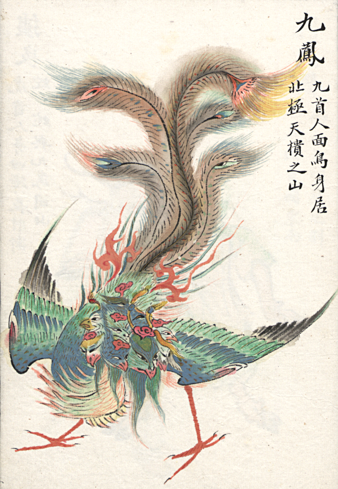

Creatures ▼


Jiutou Niao (九头鸟): Jiutou Niao means “Nine-Headed Bird” and in Ancient China, it was worshipped by the ancestors of the Warring State of Chu till demonized by the cultural dominance of the reigning Zhou Dynasty. In subsequent centuries, the legendary bird’s unnatural appearance further led to it being associated with disasters, to the extent it was given the alternate name of Gui Che (鬼车, ghostly vehicle). Some folktales additionally state that the Jiutou Niao will suck away the life force of children. On seeing it, all lights must be extinguished and hounds released to banish the evil creature.
Reference
Yong, C. (2021, September 2). 88 Chinese Mythical Creatures to Know About. Owlcation. https://owlcation.com/humanities/88-Chinese-Legendary-Creatures
← go back